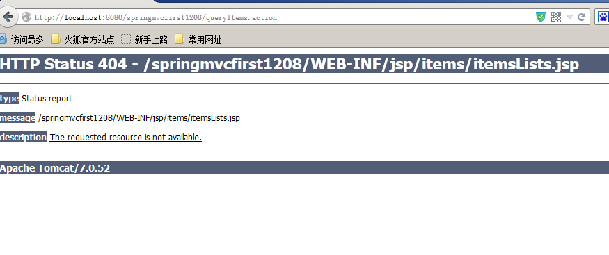
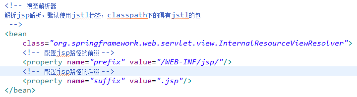

本文主要介绍一下SpringMVC框架，并且编写第一个入门程序。
课程安排：
第一天：springmvc的基础知识
什么是springmvc？
springmvc框架原理（掌握）
- 前端控制器、处理器映射器、处理器适配器、视图解析器
springmvc入门程序
- 目的：对前端控制器、处理器映射器、处理器适配器、视图解析器学习
- 非注解的处理器映射器、处理器适配器
- 注解的处理器映射器、处理器适配器（掌握）
springmvc和mybatis整合（掌握）
springmvc注解开发：（掌握）
- 常用的注解学习
- 参数绑定（简单类型、pojo、集合类型（明天讲））
- 自定义参数绑定（掌握）
springmvc和struts2区别
第二天：springmvc的高级应用
- 参数绑定（集合类型）
- 数据回显
- 上传图片
- json数据交互
- RESTful支持
- 拦截器
1 springmvc框架
1.1 什么是springmvc
springmvc是spring框架的一个模块，springmvc和spring无需通过中间整合层进行整合。
springmvc是一个基于mvc的web框架。
1.2 mvc在b/s系统 下的应用
mvc是一个设计模式，mvc在b/s系统 下的应用：
1.3 springmvc框架

第一步：发起请求到前端控制器(DispatcherServlet)
第二步：前端控制器请求HandlerMapping查找 Handler
- 可以根据xml配置、注解进行查找
第三步：处理器映射器HandlerMapping向前端控制器返回Handler
第四步：前端控制器调用处理器适配器去执行Handler
第五步：处理器适配器去执行Handler
第六步：Handler执行完成给适配器返回ModelAndView
第七步：处理器适配器向前端控制器返回ModelAndView
- ModelAndView是springmvc框架的一个底层对象，包括 Model和view
第八步：前端控制器请求视图解析器去进行视图解析
- 根据逻辑视图名解析成真正的视图(jsp)
第九步：视图解析器向前端控制器返回View
第十步：前端控制器进行视图渲染
- 视图渲染将模型数据(在ModelAndView对象中)填充到request域
第十一步：前端控制器向用户响应结果
组件：
1、前端控制器DispatcherServlet（不需要程序员开发）
作用接收请求，响应结果，相当于转发器，中央处理器。
有了DispatcherServlet减少了其它组件之间的耦合度。
2、处理器映射器HandlerMapping(不需要程序员开发)
作用：根据请求的url查找Handler
3、处理器适配器HandlerAdapter
作用：按照特定规则（HandlerAdapter要求的规则）去执行Handler
4、处理器Handler(需要程序员开发)
注意：编写Handler时按照HandlerAdapter的要求去做，这样适配器才可以去正确执行Handler
5、视图解析器View resolver(不需要程序员开发)
作用：进行视图解析，根据逻辑视图名解析成真正的视图（view）
6、视图View(需要程序员开发jsp)
View是一个接口，实现类支持不同的View类型（jsp、freemarker、pdf…）
2 入门程序
2.1 需求
以案例作为驱动。
springmvc和mybaits使用一个案例（商品订单管理）。
功能需求：商品列表查询
2.2 环境准备
数据库环境：mysql5.1
java环境：
jdk1.7.0_72
eclipse indigo
springmvc版本：spring3.2
需要spring3.2所有jar（一定包括spring-webmvc-3.2.0.RELEASE.jar）
2.3 配置前端控制器
在web.xml中配置前端控制器。
2.4 配置处理器适配器
在classpath下的springmvc.xml中配置处理器适配器
通过查看原代码：
此适配器能执行实现 Controller接口的Handler。
2.5 开发Handler
需要实现 controller接口，才能由org.springframework.web.servlet.mvc.SimpleControllerHandlerAdapter适配器执行。
2.6 视图编写
2.7 配置Handler
将编写Handler在spring容器加载。
2.8 配置处理器映射器
在classpath下的springmvc.xml中配置处理器映射器
2.9 配置视图解析器
需要配置解析jsp的视图解析器。
2.10 部署调试
访问地址：http://localhost:8080/springmvcfirst1208/queryItems.action
处理器映射器根据url找不到Handler，报下边的错误。说明url错误。
处理器映射器根据url找到了Handler，转发的jsp页面找到，报下边的错误，说明jsp页面地址错误了。

3 非注解的处理器映射器和适配器
3.1 非注解的处理器映射器
处理器映射器：
org.springframework.web.servlet.handler.BeanNameUrlHandlerMapping
另一个映射器：
org.springframework.web.servlet.handler.SimpleUrlHandlerMapping
多个映射器可以并存，前端控制器判断url能让哪些映射器映射，就让正确的映射器处理。
3.2 非注解的处理器适配器
org.springframework.web.servlet.mvc.SimpleControllerHandlerAdapter
要求编写的Handler实现 Controller接口。
org.springframework.web.servlet.mvc.HttpRequestHandlerAdapter
要求编写的Handler实现 HttpRequestHandler接口。
|
|
4 DispatcherSerlvet.properties
前端控制器从上边的文件中加载处理映射器、适配器、视图解析器等组件，如果不在springmvc.xml中配置，使用默认加载的。
5 注解的处理器映射器和适配器
在spring3.1之前使用org.springframework.web.servlet.mvc.annotation.DefaultAnnotationHandlerMapping注解映射器。
在spring3.1之后使用org.springframework.web.servlet.mvc.method.annotation.RequestMappingHandlerMapping注解映射器。
在spring3.1之前使用org.springframework.web.servlet.mvc.annotation.AnnotationMethodHandlerAdapter注解适配器。
在spring3.1之后使用org.springframework.web.servlet.mvc.method.annotation.RequestMappingHandlerAdapter注解适配器。
5.1 配置注解映射器和适配器。
|
|
5.2 开发注解Handler
使用注解的映射器和注解的适配器。（注解的映射器和注解的适配器必须配对使用）
|
|
5.3 在spring容器中加载Handler
|
|
5.4 部署调试
访问：http://localhost:8080/springmvcfirst1208/queryItems.action
（为了防止冲突，记得要给itemsController1这个Handler换个名字，然后还要使用jdk1.6版本才能正常运行）
6 源码分析（了解）
通过前端控制器源码分析springmvc的执行过程。
第一步：前端控制器接收请求
调用doDiapatch
第二步：前端控制器调用处理器映射器查找 Handler
第三步：调用处理器适配器执行Handler，得到执行结果ModelAndView
第四步：视图渲染，将model数据填充到request域。
视图解析，得到view:
调用view的渲染方法，将model数据填充到request域
渲染方法：
7 入门程序小结
通过入门程序理解springmvc前端控制器、处理器映射器、处理器适配器、视图解析器用法。
前端控制器配置：
第一种：*.action，访问以.action结尾 由DispatcherServlet进行解析
第二种：/，所以访问的地址都由DispatcherServlet进行解析，对于静态文件的解析需要配置不让DispatcherServlet进行解析
- 使用此种方式可以实现 RESTful风格的url
处理器映射器：
非注解处理器映射器（了解）
注解的处理器映射器（掌握）
- 对标记@Controller类中标识有@RequestMapping的方法进行映射。在@RequestMapping里边定义映射的url。使用注解的映射器不用在xml中配置url和Handler的映射关系。
处理器适配器：
非注解处理器适配器（了解）
注解的处理器适配器（掌握）
- 注解处理器适配器和注解的处理器映射器是配对使用。理解为不能使用非注解映射器进行映射。
|
|
实际开发使用：mvc:annotation-driven
视图解析器配置前缀和后缀：

程序中不用指定前缀和后缀：